Anhang zu: GEOMETRIE/TRIGONOMETRIE
BEWEIS: HERON'SCHE FLÄCHENFORMEL
Berührt ein Kreis die Schenkel eines Winkels, dann zeigt die Winkelhalbierende zum Kreismittelpunkt. Damit konstruieren wir den Inkreis des Dreiecks (der alle Seiten von innen berührt) und einen Ankreis (der eine Seite von außen und die Trägergeraden der anderen berührt). Zudem zeichnen wir die Radien zu den Berühungspunkten (normal auf die berührenden Geraden).
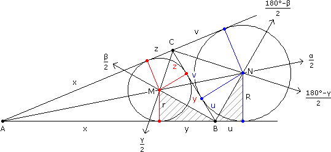
(1) Umfang 2s = 2x + 2y + 2z
 y = s – (x + z) = s – b
y = s – (x + z) = s – b(2) Umfang 2s = (c + u) + (b + v), wobei c + u = b + v
c + u = s u = s – c(3)
β
2
180° – β
2
ähnlich r
y
u
R
Rr = (s – b)(s – c)(4) Fläche A = AABM + AACM + ABCM =
cr
2
br
2
ar
2
(5) Fläche A = AABN + AACN – ABCN =
cR
2
bR
2
aR
2
(4)·(5) A2 = s(s – a)Rr = s(s – a)(s – b)(s – c)
SCHWERELINIEN DES DREIECKS?
Schwerelinien, auf denen man das Dreieck balancieren kann, gibt es unendlich viele. Üblicherweise ist eine gemeint, die von der Seitenmitte zum gegenüber liegenden Eckpunkt führt. Sie bildet die Grundlinie zweier Teildreiecke, die auf jeder Höhenstufe dieselbe Breite haben, sodass sich die Drehmomente bezüglich der Schwerelinie aufheben:
| 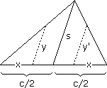 | 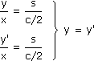 |
BEWEIS: KATHETENSÄTZE
In den "Elementen" von Euklid (ca. 300 v. Chr.) wird der Satz von Pythagoras über die Kathetensätze bewiesen: Die beiden unten eingezeichneten Dreiecke sind kongruent, weil der stumpfe Winkel und die Seiten, die ihn einschließen, gleich sind. Das schraffierte stimmt mit dem Quadrat b2 in Grundlinie und Höhe überein, das gepunktete mit dem Rechteck cq, also ist b2 = cq. Analog ist a2 = cp und in Summe a2 + b2 = c2.
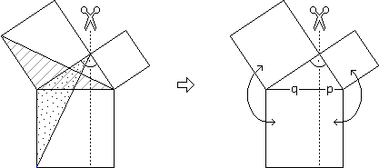
SATZ VON PYTHAGORAS UMGEDREHT?
Wenn a2 + b2 = c2, ist das Dreieck rechtwinkelig. Begründung: Wir zeichnen einen rechten Winkel mit Schenkeln der Länge a und b und verbinden die Endpunkte. Nach dem Satz von Pythagoras hat die Verbindungslinie die Länge c. Das neu gezeichnete und das ursprüngliche Dreieck haben also dieselben Seiten und sind daher kongruent.
Auch diese Argumentation findet sich schon bei Euklid. Die Anwendung in Form der Zwölfknotenschnur, also einer Schnur mit 12 Knoten in gleichen Abständen, zur Bestimmung rechter Winkel ist noch älter.
| 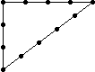 | 32 + 42 = 52 |
VOLUMEN DES KEGELSTUMPFS?
| 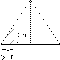 |
Volumen = Kegelvolumen2 – Kegelvolumen1 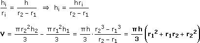 |
MANTEL DES KEGELSTUMPFS?
| 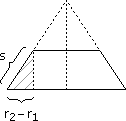 |
Mantel = Kegelmantel2 – Kegelmantel1 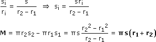 |
Merke: So wie der aufgerollte Mantel des Drehkegels ein Kreissektor ist, dessen Fläche analog zum Dreieck (Grundlinie 2πr, Höhe s) berechnet wird, ist hier der Mantel der "Saum" eines Kreissektors, dessen Fläche analog zum Trapez (Grundlinie 2πr1, Decklinie 2πr2, Höhe s) berechnet wird.
VOLUMEN DES KUGELSEGMENTS?
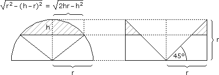
Eine Halbkugel hat – wie bereits gezeigt – auf jeder Höhe denselben Querschnitt wie der umgeschriebene Drehzylinder ohne den eingeschriebenen Drehkegel. Für das Kugelsegment (Kugelabschnitt) reduzieren wir daher den Zylinder auf dieselbe Höhe und subtrahieren den Kegelstumpf:
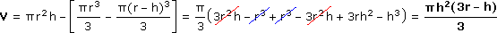
VOLUMEN DES KUGELSEKTORS?
Für den Kugelsektor (Kugelausschnitt) setzen wir das Kugelsegment und den entsprechenden Kegel zusammen (vgl. Bild oben):
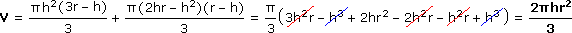
FLÄCHE DER KUGELKALOTTE?
Die Kugelkalotte (Kugelkappe) ist der zur Kugeloberfläche gehörige Teil des Kugelsektors. Den Zusammenhang zwischen dessen Volumen und der Kalottenfläche erhalten wir – indem wir den Kugelsektor in immer schmalere Pyramiden zerlegen – aus der Formel für das Pyramidenvolumen:
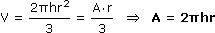